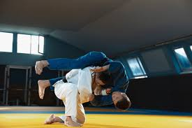
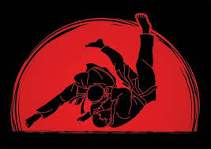
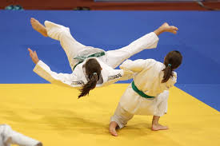
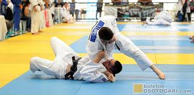

𝙹𝚞𝚍𝚘-𝚊𝚛𝚝𝚎 𝚖𝚊𝚛𝚌𝚒𝚊𝚕 𝚓𝚊𝚙𝚘𝚗𝚎𝚜𝚊
𝘿𝙚𝙨𝙗𝙡𝙤𝙦𝙪𝙚𝙞𝙚 𝙨𝙚𝙪 𝙥𝙤𝙩𝙚𝙣𝙘𝙞𝙖𝙡 𝙘𝙤𝙢 𝙖 𝙖𝙧𝙩𝙚 𝙢𝙖𝙧𝙘𝙞𝙖𝙡 𝙢𝙖𝙞𝙨 𝙧𝙚𝙨𝙥𝙚𝙞𝙩𝙖𝙙𝙖 𝙙𝙤 𝙢𝙪𝙣𝙙𝙤.
𝐒𝐎𝐁𝐑𝐄 𝐎 𝐉𝐔𝐃𝐎
O Judo é uma arte marcial japonesa que combina técnicas de luta, condicionamento físico e disciplina mental. Criado por Jigoro Kano em 1882, é conhecido por sua eficácia em combate e sua capacidade de melhorar a saúde e o bem-estar.
 Judô é uma arte marcial praticada como esporte. Criada por Jigoro Kano em 1882, o judô é uma adaptação do jiu-jitsu, que tem por objetivo desenvolver técnicas de defesa pessoal, fortalecer o corpo, o físico e a mente de forma integrada. Foi considerado esporte oficial no Japão no final do século XIX.
- resistência e a força física
- Melhora a flexibilidade e a coordenação
- Desenvolve a disciplina e a concentração
- Reduz o estresse e a ansiedade
𝐁𝐄𝐍𝐄𝐅𝐈𝐂𝐈𝐎𝐒 𝐃𝐎 𝐉𝐔𝐃𝐎
𝐓𝐑𝐄𝐈𝐍𝐀𝐌𝐄𝐍𝐓𝐎 𝐃𝐄 𝐉𝐔𝐃𝐎
Nosso treinamento é conduzido por professores experientes e certificados, que irão guiar você em sua jornada de aprendizado.
𝐓𝐑𝐄𝐈𝐍𝐀𝐌𝐄𝐍𝐓𝐎 𝐁𝐀𝐒𝐈𝐂𝐎
Aprenda as técnicas fundamentais do Judo, como pode se ver na imagens um dos golpes mais conhecidos do jupo o "ipon"
𝐂𝐎𝐌𝐏𝐄𝐓𝐈Ç𝐀𝐎 𝐃𝐄 𝐉𝐔𝐃𝐎
Participe de competições locais e internacionais e teste suas habilidades contra os melhores lutadores do mundo.
 Fale conosco para saber mais sobre nossos treinamentos e serviços.